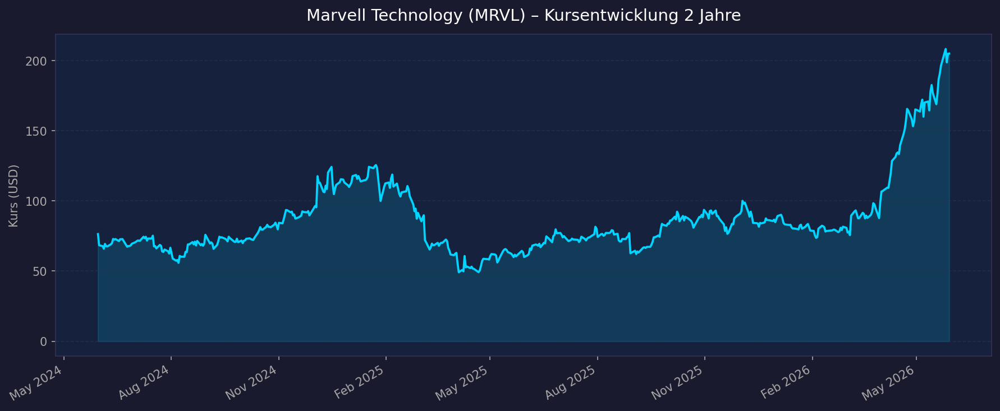
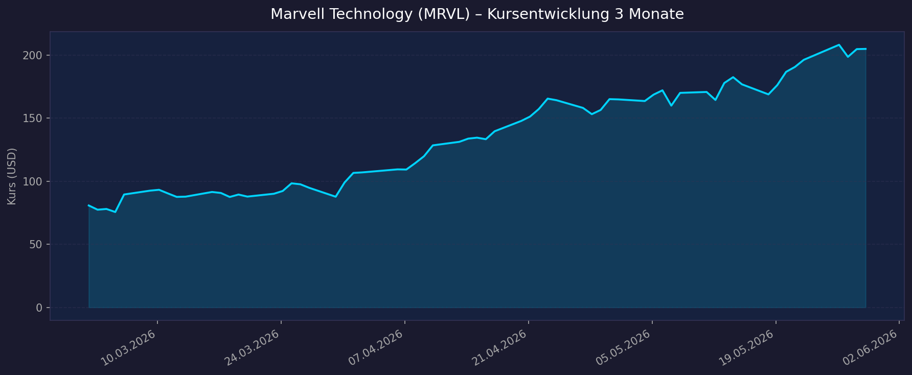

Branche: Semiconductors · Börse: NASDAQ · Sektor: Technology
Marktkapitalisierung: ~$179,5 Mrd. · Aktien im Umlauf: ~875 Mio.
📈 1. Kursentwicklung
Aktueller Kurs: $205,00 | YTD 2026: +141,2% | Beta: 2,29
Chart – 2 Jahre

Chart – 3 Monate

| Zeitraum | Kurs Start | Kurs Ende | Veränderung |
|---|---|---|---|
| 2 Jahre (Mai 2024 → Mai 2026) | $76,39 | $205,00 | +168,4% |
| 3 Monate (Feb 2026 → Mai 2026) | $80,82 | $205,00 | +153,7% |
| 52-Wochen-Hoch | — | $218,26 | — |
| 52-Wochen-Tief | — | $58,61 | — |
Kurskommentar: Massive Beschleunigung im Q1 2026 dank starker Quartalszahlen und AI-Infrastruktur-Fantasie. Die Aktie hat sich in 3 Monaten mehr als verdoppelt – ein seltenes Momentum-Signal, aber auch Zeichen extremer Erwartungshaltung.
💹 2. KGV-Entwicklung (Kurs-Gewinn-Verhältnis)
Aktuelles Trailing KGV (TTM): ~70x | Forward KGV: ~34x
⚠️ Hinweis: GAAP-KGV ist verzerrt durch hohe Abschreibungen aus Akquisitionen. Der Markt bewertet MRVL primär auf Non-GAAP-Basis (bereinigt).
| Zeitraum | KGV (GAAP) | Forward KGV | Einordnung |
|---|---|---|---|
| Aktuell (Mai 2026) | ~70x | ~34x | Deutlich über Branchenmedian (37x Forward) |
| vor 3 Monaten (Feb 2026) | negativ | ~28x | GAAP-Verluste |
| vor 12 Monaten (Mai 2025) | negativ | ~22x | GAAP-Verluste |
| vor 24 Monaten (Mai 2024) | negativ | ~18x | GAAP-Verluste |
Bewertung: Das KGV war über Jahre negativ (wegen Goodwill-Abschreibungen aus der Inphi/Innovium-Akquisition). Das Trailing-KGV von 70x erscheint hoch, der Forward-KGV von 34x reflektiert das erwartete Non-GAAP EPS-Wachstum. Branchenmedian Forward-KGV: 37x. MRVL handelt mit ~43% Premium – gerechtfertigt durch das Wachstumsprofil.
💰 3. Sales Multiple (Kurs-Umsatz-Verhältnis / P/S)
Aktuelles P/S-Verhältnis: 20,6x (TTM)
| Zeitraum | P/S Ratio | Einordnung |
|---|---|---|
| Aktuell (Mai 2026) | 20,6x | Historisch hoch |
| Sep 2025 | 7,6x | Nach AI-Rally Anstieg begann |
| Mai 2025 | 8,9x | Moderate Bewertung |
| Mai 2024 | ~7-9x | Normalniveau für Chip-Unternehmen |
Trend: Stark steigend – Das P/S hat sich in ~8 Monaten von 8,9x auf 20,6x mehr als verdoppelt. Der Branchendurchschnitt liegt bei ~10x. MRVL handelt mit ~4% Prämium auf den Branchen-Durchschnitt P/S. Dieser Sprung spiegelt die AI-getriebene Neubewertung wider.
📊 4. Handelsvolumen (Trading Volume)
| Zeitraum | Ø Tagesvolumen | Auffälligkeiten |
|---|---|---|
| 3-Monats-Durchschnitt | 27,3 Mio. Aktien | Sehr hohe Liquidität |
| 10-Tages-Durchschnitt | 32,9 Mio. Aktien | Erhöht durch Earnings-Woche |
| 2-Jahres-Durchschnitt | 17,7 Mio. Aktien | Starke Zunahme des Interesses |
| Volumen-Peak (2J) | 96,8 Mio. Aktien | 29.08.2025 (nach Q2-Earnings-Überraschung: +58% yoy) |
Volumentrend: Deutliche Zunahme des institutionellen Interesses – das Volumen hat sich gegenüber dem 2-Jahres-Durchschnitt fast verdoppelt. Der Volumen-Peak am 29.08.2025 korreliert mit dem Q2-FY2026-Earnings-Bericht (+58% Umsatzwachstum), der die Aktie erstmals massiv in den Fokus der AI-Investoren brachte.
🏦 5. Insider Trades (letzte 2 Jahre)
| Datum | Name | Funktion | Kauf/Verkauf | Anzahl Aktien | Wert (USD) |
|---|---|---|---|---|---|
| 13.05.2026 | Matthew J. Murphy | Chairman & CEO | Verkauf | 7.500 | $1.329.450 |
| 15.05.2026 | Willem A. Meintjes | CFO | Verkauf | 4.000 | ~$700.960 |
| Mär 2026 | Affiliate (unbekannt) | — | Verkauf (Form 144) | 30.000 | k.A. |
3-Monats-Überblick: Ausschließlich Insider-Verkäufe. Beide Trades (CEO + CFO) erfolgten über Rule 10b5-1 Pläne (vorgeplante Verkaufsprogramme) – kein Signal für kurzfristigen Pessimismus, aber Gewinnmitnahmen auf hohem Niveau.
2-Jahres-Überblick: Überwiegend Verkäufe durch Führungskräfte. Insider Ownership: 0,74% – niedrig, typisch für US-Tech-Unternehmen dieser Größe. Institutionelle Ownership: 81,94%.
Quelle: SEC EDGAR / StockTitan / MarketScreener
🩳 6. Short-Positionen
Aktuelle Short Quote: ~3,7% des Streubesitzes (Float) | Short Shares: 32,25 Mio.
| Zeitraum | Short Interest | Veränderung |
|---|---|---|
| Aktuell (Mai 2026) | 32,25 Mio. / 3,7% | +14% ggü. Vormonat |
| Nov 2025 – Jan 2026 | ~23-25 Mio. / ~2,6% | — |
| Jan 2025 | 15,98 Mio. (Minimum) | — |
| Aug 2024 | 36,51 Mio. / ~4,5% | — |
| Jun 2024 | 43,9 Mio. (Maximum) | — |
Einschätzung: Mit 3,7% liegt die Short Quote im niedrigen bis moderaten Bereich – kein Alarmsignal, aber der jüngste Anstieg (+14% in einem Monat) deutet darauf hin, dass einige Investoren die extreme Bewertung nach dem Kursanstieg hedgen. Das Niveau liegt deutlich unter dem Peak (Jun 2024: 43,9 Mio.), als der Markt noch an MRVLs AI-Potenzial zweifelte.
🗞️ 7. Aktuelle Nachrichten (Mai 2026)
| Datum | Quelle | Nachricht | Relevanz |
|---|---|---|---|
| 27.05.2026 | Reuters / Benzinga | Q1 FY2027 Earnings Beat: $2,418 Mrd. Umsatz, +28% yoy | Hoch |
| 27.05.2026 | Melius Research | Kursziel angehoben: $140 → $220 | Hoch |
| 27.05.2026 | Citi | Kursziel angehoben: $118 → $215 | Hoch |
| 27.05.2026 | Stifel | Kursziel angehoben: $140 → $210 | Hoch |
| 27.05.2026 | Diverse | FY2027-Ausblick: +40% Umsatz → ca. $11,5 Mrd. | Hoch |
| 26.05.2026 | TimothySykes / MoneyMorning | "MRVL Stock Rallies As Wall Street Chases AI Upside" | Mittel |
| 2026 | Finviz / MarketBeat | "Marvell Is Becoming Broadcom's Most Credible Rival" | Mittel |
| 2026 | CNBC / Investing.com | Nvidia investiert direkt in Marvell Optical Connectivity | Hoch |
Analysten-Konsens: 32 Analysten, Buy-Rating. Kursziele konzentrieren sich auf $210–$220.
Sentiment: Überwiegend stark positiv – AI-Investitionsthese voll intakt, Guidance überzeugt, Nvidia-Partnerschaft als Validierung.
📋 8. Letzte 3 Quartalsberichte
Hinweis Fiskaljahr: Marvells Geschäftsjahr endet Ende Januar/Anfang Februar. FY2027 Q1 = Kalendermonate Feb–Apr/Mai 2026.
Q1 FY2027 (Quartal Feb–Mai 2026 | gemeldet 27.05.2026)
| Kennzahl | Ist | Erwartung | Abweichung |
|---|---|---|---|
| Umsatz (Revenue) | $2.418 Mrd. | ~$2.400 Mrd. (Guidance-Mitte) | +$18 Mio. Beat |
| EPS non-GAAP | $0,80 | $0,75–0,79 | +6,7% Beat |
| EPS GAAP | $0,04 | — | — |
| GAAP Gross Margin | 52,1% | — | — |
| non-GAAP Gross Margin | 58,9% | — | — |
| Free Cash Flow | $483 Mio. | — | — |
| Operating Cash Flow | $639 Mio. (Rekord) | — | — |
Highlights:
- Data Center Segment: 76% des Gesamtumsatzes
- Umsatzwachstum: +28% year-over-year
Guidance Q2 FY2027: $2,7 Mrd. Umsatz (+12% sequenziell, +35% yoy)
FY2027 Gesamtausblick: ~$11,5 Mrd. Umsatz (+40% yoy)
Kursreaktion: +~10% nach Earnings (von ~$185 auf $205)
Q4 FY2026 (Quartal Nov 2025 – Jan 2026 | gemeldet Jan 2026)
| Kennzahl | Ist | Erwartung | Abweichung |
|---|---|---|---|
| Umsatz (Revenue) | $2.219 Mrd. | ~$2.200 Mrd. (Guidance-Mitte) | +$19 Mio. Beat |
| EPS GAAP (diluted) | $0,46 | — | — |
| Free Cash Flow | $259 Mio. | — | — |
| Nettomarge (GAAP) | 17,9% | — | — |
Guidance: Weiteres Wachstum in Richtung $2,4 Mrd. für Q1 FY2027
Kursreaktion: Daten nicht verfügbar
Q3 FY2026 (Quartal Aug–Nov 2025 | gemeldet Nov 2025)
| Kennzahl | Ist | Erwartung | Abweichung |
|---|---|---|---|
| Umsatz (Revenue) | $2.075 Mrd. | — | +37% yoy |
| EPS GAAP (diluted) | $2,20 ⚠️ | — | Enthält einmaligen IP-Veräußerungsgewinn |
| EPS non-GAAP | $0,76 | — | — |
| Free Cash Flow | $509 Mio. | — | — |
| Nettomarge (GAAP) | 91,7% ⚠️ | — | Durch Einmaleffekt verzerrt |
Hinweis: Die außergewöhnlich hohe GAAP-Nettomarge von 91,7% (GAAP Net Income: $1,9 Mrd.) ist auf einen einmaligen Gewinn aus der Veräußerung von IP-Vermögenswerten zurückzuführen – kein operativer Regelfall.
Kursreaktion: Daten nicht verfügbar
📝 Gesamteinschätzung
Stärken:
- 🚀 Explosives AI-getriebenes Wachstum: Data Center macht 76% des Umsatzes aus
- 🏆 Drei Rekord-Umsätze in Folge – FY2027-Guidance: +40% auf $11,5 Mrd.
- 🔧 Custom ASIC / XPU-Chips als strategische Differenzierung gegenüber NVIDIA (Hyperscaler-Direktdesigns)
- 🤝 Nvidia-Partnerschaft im Bereich Optical Connectivity – industrielle Validierung
- 💵 Starker Free Cash Flow (Q1 FY2027: $483 Mio., OCF-Rekord: $639 Mio.)
- 📊 32 Analysten mit Buy-Konsens, Kursziele $210–$220
Risiken:
- ⚠️ Extreme Bewertung: P/S 20,6x (Branche: ~10x), Trailing P/E 70x
- 📉 Konzentrationsrisiko: Fast vollständige Abhängigkeit vom AI-Boom (76% Data Center)
- 💸 Insiderverkäufe von CEO und CFO (wenn auch via 10b5-1 Pläne)
- 📈 Steigendes Short Interest (+14% im letzten Monat) – Hedging auf hohem Niveau
- 🎢 Sehr hohe Beta (2,29) – Aktie schwankt extrem, kein defensives Investment
- 📉 GAAP-Nettomarge schwach (Q1 FY2027: nur 1,4% GAAP) – Non-GAAP vs. GAAP-Schere bleibt groß
Fazit: Marvell Technology hat sich innerhalb von 3 Monaten durch konsequente Earnings-Beats und eine glasklare AI-Infrastruktur-Story von einem Nischen-Chip-Unternehmen zu einem der heißesten AI-Spieler an der NASDAQ entwickelt. Die fundamentale Wachstumsstory (Custom ASIC, Optical, Data Center) ist überzeugend – doch bei P/S 20x und Forward-KGV 34x ist bereits erhebliches Wachstum eingepreist. Rückschlagpotenzial bei jeder Enttäuschung ist angesichts der Beta von 2,3 erheblich.
Datenquellen: Yahoo Finance (yfinance) · Macrotrends · StockAnalysis · MarketBeat · Finviz · SEC EDGAR · StockTitan · MarketScreener · Reuters · Benzinga · MoneyMorning
Keine Anlageberatung – rein informative Auswertung öffentlicher Daten